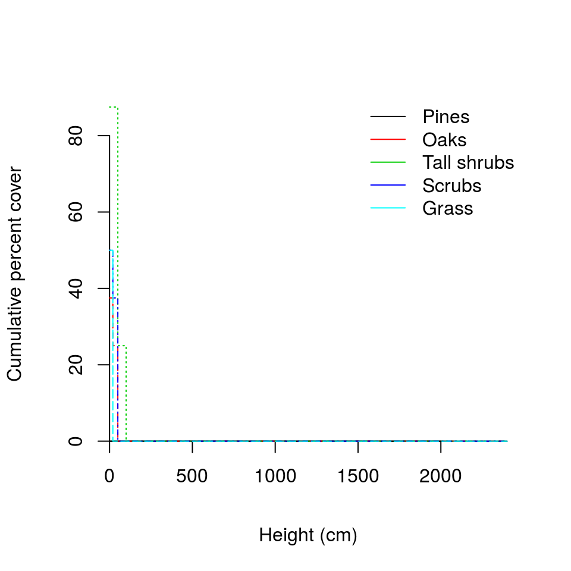
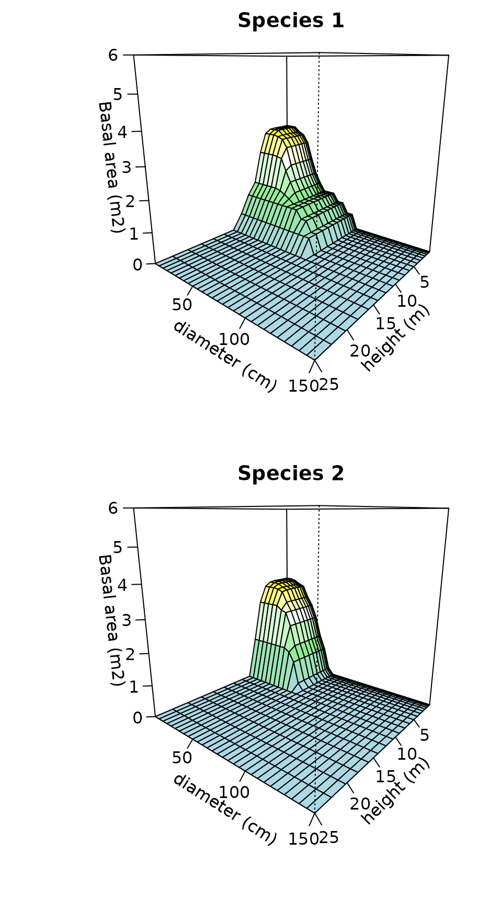
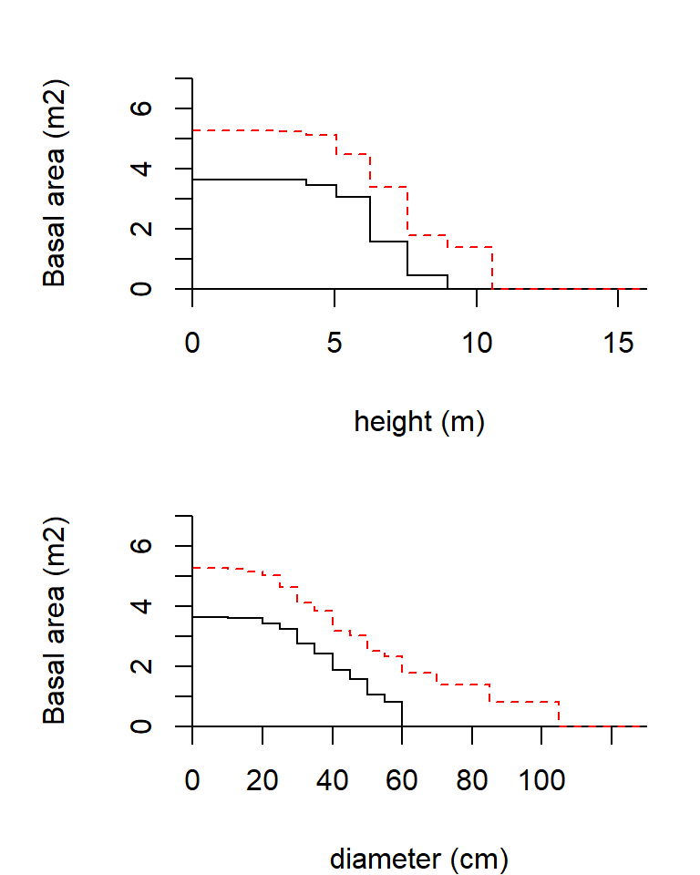
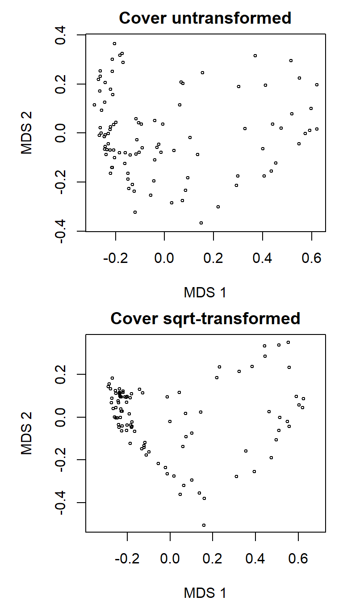
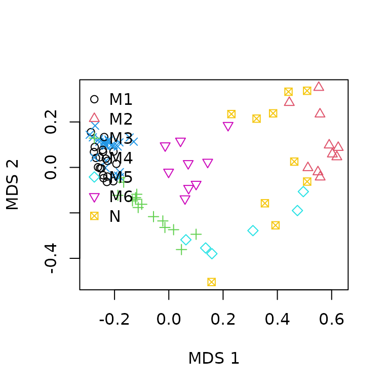
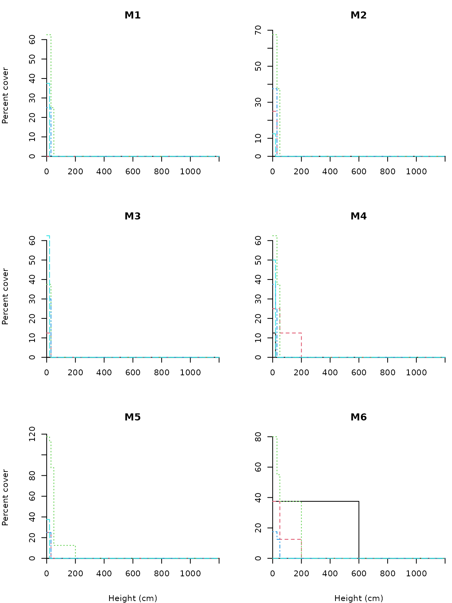

The aim of this tutorial is to show how to implement the method to calculate dissimilarities between communities presented in De Caceres et al (2013). This method allows incorporating both the structure and the composition of the community in the dissimilary measurement. The functions needed to carry out computations have been included in package vegclust so we start by loading the package:
library(vegclust)## Loading required package: vegan## Loading required package: permute## Loading required package: lattice## This is vegan 2.5-1## Loading required package: KendallIn order to illustrate the method we will use a stratified vegetation data set containing data from 96 stands. The data was obtained to investigate patterns vegetation regeneration three years after the impact of a wildfire. Data were collected in 2012 by Miquel De Caceres and Albert Petit in Horta de Sant Joan (Catalonia, Spain). The R object is of class stratifiedvegdata (actually a list).
data(medreg)
class(medreg)## [1] "stratifiedvegdata" "list"
length(medreg)## [1] 96The dataset contains 96 stands (list elements), each of them a data.frame where rows correspond to broad plant functional groups (Pine trees, Oak trees, Tall shrubs and small trees, Scrubs and small shrubs and Grass) and columns correspond to vegetation strata (1 to 7). The upper heights of the vegetation strata are the following (in cm.) vector:
strataUp = c(20,50,100,300,600,1200,2400)And the width (range of heights) of each stratum is:
strataWidths = c(20,30,50,200,300,600,1200)Species abundance values are percentage cover values estimated using cover classes:
medreg[[1]]## 1 2 3 4 5 6 7
## Pine trees 0.0 0.0 0 0 0 0 0
## Quercus trees 12.5 25.0 0 0 0 0 0
## Tall shrubs and small trees 0.0 62.5 25 0 0 0 0
## Scrubs and small shrubs 12.5 37.5 0 0 0 0 0
## Grass 50.0 0.0 0 0 0 0 0The data is read as follows. Shrubs reaching stratum 3 (50 - 100 cm) had a cumulative cover of 25%, while shrubs reaching only stratum 2 (20 - 50 cm) had a cumulative cover of 62.5%. Thus, the observers grouped plants according to their height and functional group, and estimated the cover for those groups of plants.
The cumulative abundance profile (CAP) is a function that takes a value of size as input (here the size is a vegetation stratum) and returns the cumulative abundance of organisms (here the cumulative cover value) whose size is equal to or larger than the input value. In our case, the CAP function is the cumulative cover of plants reaching the current stratum or higher strata. Calculations are made using function CAP() of vegclust:
medreg.CAP <- CAP(medreg)Note that a different CAP is calculated for each functional group and plot. The structure of the resulting R object is very similar to the stratified data:
class(medreg.CAP)## [1] "CAP" "list"
length(medreg.CAP)## [1] 96If we inspect the first element of the list, we can see the difference between the original data and the cumulative abundance profile.
medreg.CAP[[1]]## 1 2 3 4 5 6 7
## Pine trees 0.0 0.0 0 0 0 0 0
## Quercus trees 37.5 25.0 0 0 0 0 0
## Tall shrubs and small trees 87.5 87.5 25 0 0 0 0
## Scrubs and small shrubs 50.0 37.5 0 0 0 0 0
## Grass 50.0 0.0 0 0 0 0 0Moreover, it is possible to graphically display the CAP of a given stand (it may become difficult to interpret when the number of species is large). For example, we can display the CAP for each functional group of the first stand (plots="1"):
plot(medreg.CAP, plots="1", sizes=strataUp, xlab="Height (cm)",
ylab="Cumulative percent cover")
legend("topright", col=1:5, lty=1,
legend=c("Pines","Oaks","Tall shrubs","Scrubs","Grass"),
bty="n")
In this case the vegetation is a short but dense shrubland. Note that in the plot we used strataUp to set the x-axis, so that real heights are adequately represented.
The concept of cumulative abundance profile can be extended to two structural variables, which leads to the concept of cumulative abundance surface (CAS). The CAS is a function that takes a the values of two structural variables (size1 and size2) as input and returns the cumulative abundance of organisms whose size is equal to or larger than the input values in one of the structural variables or in both. In the case of forests, natural choices for structural variables are tree diameter and tree height. Since our post-fire regeneration dataset only includes one structural variable, we will illustrate the concept of CASs using a synthetic data set consisting in a single plot where the species identity, diameter and height of a hundred trees has been measured. We start by building a tree-based data set:
pl = rep(1,100) # All trees in the same plot
sp = ifelse(runif(100)>0.5,1,2) # Random species identity (species 1 or 2)
h=rgamma(100,10,2) # Heights (m)
d = rpois(100, lambda=h^2) # Diameters (cm)
m = data.frame(plot=pl,species=sp, height=h,diameter=d) In this example, we will use basal area (m2) as measure of abundance. We calculate the area (in square meters) of each tree:
m$ba = pi*(m$diameter/200)^2
This specific data looks as follows:
print(head(m))## plot species height diameter ba
## 1 1 2 2.804916 6 0.002827433
## 2 1 2 4.500761 26 0.053092916
## 3 1 1 4.823540 22 0.038013271
## 4 1 2 6.561648 46 0.166190251
## 5 1 2 4.605050 21 0.034636059
## 6 1 1 6.844679 55 0.237582944We start our analysis by defining two sets of size classes, one for height and the other for diameter:
heights = seq(0,4, by=.25)^2 # Quadratic classes
diams = seq(0,130, by=5) # Linear classes
We are ready to stratify the data set:
plotColumn = "plot", speciesColumn = "species",
size1Column = "height", size2Column = "diameter",
abundanceColumn = "ba")Function stratifyvegdata() is used to reshape data sets so that they are suitable for calculating CAPs or CASs. In the case of one structural variable, the function returns a list of matrices, one for each plot. The post-fire vegetation data presented in the previous section is an example of this. In the case of two structural variables, stratifyvegdata() returns a list of three-dimensional arrays, one for each plot. The cumulative abundance surface is then calculated using function CAS:
tree.CAS <- CAS(tree.S)We can plot the surface corresponding to each species as follows:
par(mfrow=c(2,1), mar=c(4,5,2,1))
plot(tree.CAS, species=1, sizes1=heights[-1], xlab="height (m)",
ylab="diameter (cm)", sizes2=diams[-1], zlab="Basal area (m2)",
zlim = c(0,6), main="Species 1")
plot(tree.CAS, species=2, sizes1=heights[-1], xlab="height (m)",
ylab="diameter (cm)", sizes2=diams[-1], zlab="Basal area (m2)",
zlim = c(0,6), main = "Species 2")
One nice property of CAS is that its marginal distributions are CAPs. This can be easily shown if we compare the marginal CAP for height:
## $`1`
## (0,0.0625] (0.0625,0.25] (0.25,0.562] (0.562,1] (1,1.56] (1.56,2.25]
## 1 4.149730 4.149730 4.149730 4.149730 4.149730 4.149730
## 2 4.448809 4.448809 4.448809 4.448809 4.448809 4.448809
## (2.25,3.06] (3.06,4] (4,5.06] (5.06,6.25] (6.25,7.56] (7.56,9] (9,10.6]
## 1 4.149730 4.125618 4.062629 3.356399 2.677344 1.3522200 0.000000
## 2 4.448809 4.421399 4.297306 3.603642 2.429079 0.9199369 0.664761
## (10.6,12.2] (12.2,14.1] (14.1,16]
## 1 0 0 0
## 2 0 0 0
##
## attr(,"class")
## [1] "CAP" "list"with the CAP directly build using heights:
speciesColumn = "species", size1Column = "height",
abundanceColumn = "ba")
print(CAP(tree.S2))## $`1`
## (0,0.0625] (0.0625,0.25] (0.25,0.562] (0.562,1] (1,1.56] (1.56,2.25]
## 1 4.149730 4.149730 4.149730 4.149730 4.149730 4.149730
## 2 4.448809 4.448809 4.448809 4.448809 4.448809 4.448809
## (2.25,3.06] (3.06,4] (4,5.06] (5.06,6.25] (6.25,7.56] (7.56,9] (9,10.6]
## 1 4.149730 4.125618 4.062629 3.356399 2.677344 1.3522200 0.000000
## 2 4.448809 4.421399 4.297306 3.603642 2.429079 0.9199369 0.664761
## (10.6,12.2] (12.2,14.1] (14.1,16]
## 1 0 0 0
## 2 0 0 0
##
## attr(,"class")
## [1] "CAP" "list"Finally, compare the previous three-dimensional figures, with the marginal CAP plots for diameters and heights:
par(mfrow=c(2,1), mar=c(4,5,2,1))
xlab="height (m)", ylab="Basal area (m2)", ylim = c(0,7))
xlab="diameter (cm)", ylab="Basal area (m2)", ylim = c(0,7))
Although CAPs can be used to graphically display the structure and composition of vegetation stands, the whole point of defining the CAP function was to allow comparisons between stands. Returning to the post-fire vegetation regeneration data, we can calculate dissimilarities for all pairs of stands, thus obtaining a square and symmetric matrix with dissimilarity values:
classWeights=strataWidths)In the above sentence we forced strata to have different weight, according to the range of heights that each stratum occupies. There are different alternatives with respect to the dissimilarity index. In our case we chose the CAP generalization of Bray-Curtis (De Caceres et al 2013). If we want to know, for example, the dissimilarity between stands 1' and2’ we simply write:
as.matrix(medreg.D)[1,2]## [1] 0.2713178When calculating dissimilarities it is possible to transform the CAP values in order to prevent large abundance values to have an undue influence in the analysis. In our case we choose to take the square root of cumulative cover values:
classWeights=strataWidths, transform="sqrt")We can use metric multidimensional scaling to represent the distances between stands obtained in both cases:
par(mfrow=c(2,1), mar=c(4,5,2,1))
X<-cmdscale(medreg.D, k=2)
plot(X, xlab="MDS 1", ylab="MDS 2", asp=1,
main="Cover untransformed", cex=0.5)
Xsqrt<-cmdscale(medreg.Dsqrt, k=2)
plot(Xsqrt, xlab="MDS 1", ylab="MDS 2", asp=1,
main="Cover sqrt-transformed", cex=0.5)
Note that the differences between the two ordination plots are remarkable.
In this section we use the square-root transformed dissimilarities between vegetation stands to obtain a classification of the stands in terms of their structure and composition. If you are not familiarized with non-hierarchical clustering, you can read the tutorial about vegclust package. We start by setting the number of clusters to be found (nclusters) and the size of clusters (dnoise, a parameter used to leave stands that are far from all group prototypes unclassified):
nclusters = 6
dnoise = 0.40
We call function vegclust() using the clustering method "HNCdd", which indicates (a) hard clustering, (b) medoids as prototypes, and (c) noise clustering (i.e. excluding outliers in a special class called noise class):
vc<-vegclustdist(medreg.Dsqrt, mobileMemb = nclusters,
method="HNCdd", dnoise=dnoise, nstart=100)With nstart=100 we indicate that the algorithm should be run 100 times starting from random seeds. This is advisable in order to maximize the chance of having suboptimal solutions. The prototypes identified by the algorithm are the following medoids (these are indices of stands in medreg):
medoids<-vc$mobileCenters
print(medoids)## [1] 4 24 92 7 20 38The number of stands belonging to each cluster can be found using:
cluster<-defuzzify(vc)$cluster
table(cluster)## cluster
## M1 M2 M3 M4 M5 M6 N
## 9 24 9 11 20 13 10Note that, because of the model chosen (and with the parameter dnoise), there are a number of stands that are left unclassified (i.e. those assigned to class “N”). A useful way to display the results of the cluster analysis is by showing the stand memberships to clusters in the ordination:
clNum = as.numeric(as.factor(cluster))
plot(Xsqrt, xlab="MDS 1", ylab="MDS 2",
pch=clNum, col=clNum)
legend("topleft", col=1:(nclusters+1), pch=1:(nclusters+1),
legend=levels(as.factor(cluster)), bty="n")
While the stands belonging to true clusters are more or less close, those that are assigned to the noise can be far appart, because the only fact that makes them be in the same class is their lack of membership for true clusters.
To facilitate the interpretation of the clusters we can extract the cumulative abundance profiles of the cluster medoids:
CAPm = CAPcenters(medreg.CAP, vc)
n = names(CAPm)For example, we can inspect the structure and composition of the fourth group:
round(CAPm[[n[4]]], dig=1)## 1 2 3 4 5 6 7
## Pine trees 12.5 0.0 0.0 0 0 0 0
## Quercus trees 25.0 25.0 25.0 0 0 0 0
## Tall shrubs and small trees 75.0 62.5 37.5 0 0 0 0
## Scrubs and small shrubs 37.5 37.5 0.0 0 0 0 0
## Grass 25.0 0.0 0.0 0 0 0 0The following displays graphically the CAPs of all six groups of vegetation stands (code not shown):
